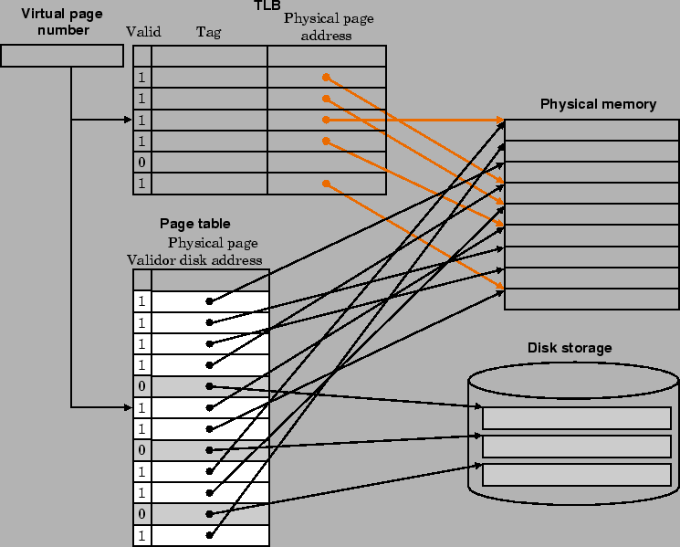

เมื่อมีเพจฟอล์ทเกิดขึ้น ระบบปฏิบัติการจะเข้ามาควบคุม โดยการค้นหาเพจในหน่วยความจำลำดับถัดไป และตัดสินใจแทนที่เพจนั้นในหน่วยความจำหลัก ระบบปฏิบัติการมักจะสร้างพื้นที่บนแผ่นจานบันทึกสำหรับทุกเพจ เมื่อมีการสร้างโปรเซส ซึ่งเรียกว่า พื้นที่แลกเปลี่ยน (Swap Space) เพื่อให้เป็นพื้นที่สำรองสำหรับหน่วยความจำเสมือนของโปรเซส แสดงในรูป 7.16
|

|
ระบบปฏิบัติการยังสร้างส่วนประกอบซึ่งคอยติดตามว่าโปรเซสใดและตำแหน่งอ้างอิงเสมือนใดที่ใช้เพจในหน่วยความจำ เมื่อเกิดเพจฟอล์ท ถ้าทถกเพจในหน่วยความจำหลักถูกใช้อยู่ ระบบปฏิบัติการต้องเลือกเพจที่จะต้องถูกแทนที่
เพื่อให้จำนวนเพจฟอล์ทเกิดน้อยที่สุด ระบบปฏิบัติการพยายามที่จะเลือกเพจซึ่งคาดว่าจะไม่ถูกใช้ในเร็วๆ นี้ โดยใช้วิธีแทนที่ยังเพจที่ใช้น้อยที่สุด (Least Recently Used, LRU) และเพจที่ถูกแทนที่ก็จะถูกเขียนลงในพื้นที่แลกเปลี่ยนบนแผ่นจานบันทึก